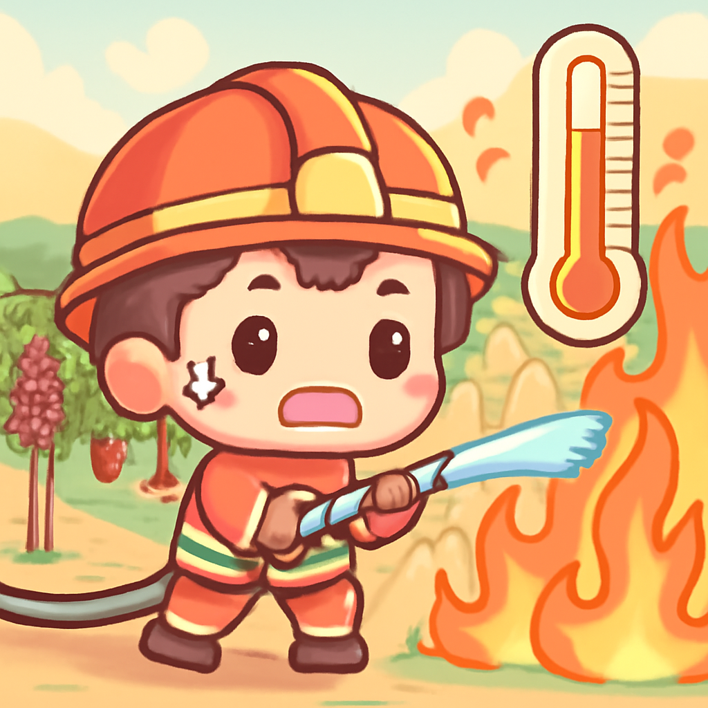
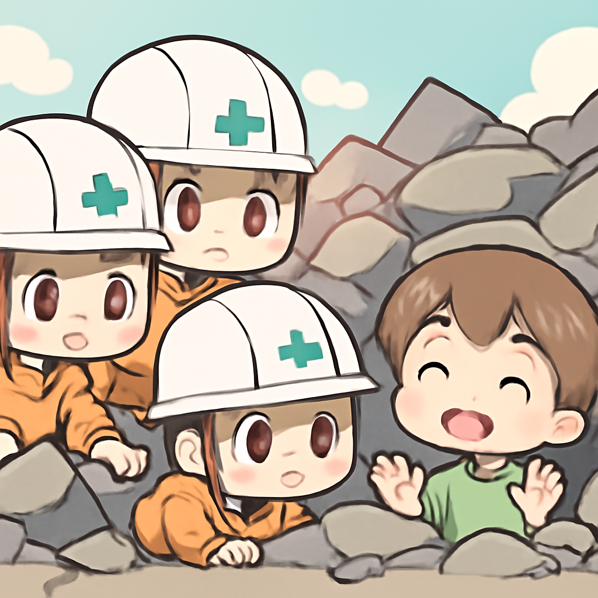

其一 · 法國吉朗德 · 野火再起，氣溫破40度
法國吉朗德地區面臨新一波熱浪與野火威脅。

在法國吉朗德地區，野火再次惡化，預計周三氣溫將飆升至40度，讓消防隊員的工作變得更加艱難。這不僅影響了當地的生態，也讓葡萄酒產業的前景蒙上陰影。希望這場火災不會讓我們的法國紅酒都變成燒酒！
🔗 原始新聞 ↗
2026-07-29 · 以古觀今，以笑抗愁
法國吉朗德地區面臨新一波熱浪與野火威脅。

在法國吉朗德地區，野火再次惡化，預計周三氣溫將飆升至40度，讓消防隊員的工作變得更加艱難。這不僅影響了當地的生態，也讓葡萄酒產業的前景蒙上陰影。希望這場火災不會讓我們的法國紅酒都變成燒酒！
🔗 原始新聞 ↗
肯亞14頭大象死亡，當地急召調查。
肯亞南部發生了14頭大象的神秘死亡事件，這是數十年來在該地區記錄到的最高死亡數字。這事件引起了環保人士的警覺，因為大象在生態系統中扮演著重要角色。如果不查清楚原因，我們可能要考慮給大象們設立保護區，免得它們再遭不幸。
🔗 原始新聞 ↗
美國在聯合國會議上中途退場，氣氛緊張。
在華府的聯合國安全理事會會議上，美國代表在法國發言時突然退場，這一行為引發了各方的關注。這是因為美國與北韓和俄羅斯共同投票反對延長人權高專任期的事件，顯示了國際間的緊張局勢。看來這場會議比預期的還要刺激！
🔗 原始新聞 ↗
日本熊本發生6.8級地震，救援工作緊急展開。

日本熊本在最近發生了一場6.8級的強震，造成多棟建築倒塌，當地的緊急救援隊正全力以赴尋找被困民眾。這場地震讓人們再次意識到自然災害的威脅，或許未來我們需要更好地準備應對這樣的挑戰。希望大家都能安全平安！
🔗 原始新聞 ↗
伊朗處決案件激增，引發國際關注。
人權活動人士報導，伊朗政府的處決速度正在加快，最近的一次處決引起了公眾的抗議。這顯示出當地人權狀況的惡化，並可能引發國際社會的強烈反對。面對如此嚴峻的問題，我們不禁要問：人權究竟在何方？
🔗 原始新聞 ↗